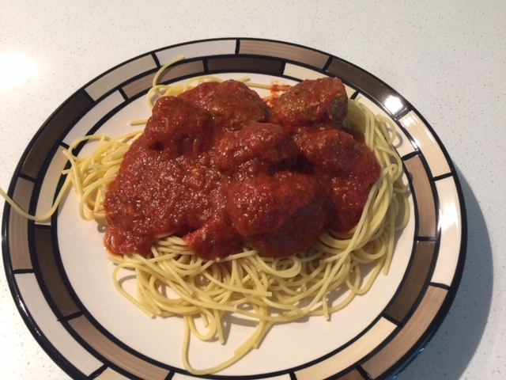

The Greatest Meatballs on Planet Earth
Spaghetti and Meatballs (⏰: 45 minutes)
← Back to Recipe Index 🍽

Ingredients:
- 800g Extra Lean Ground Beef
- 1 Egg
- 1/4 Cup Parmesan Cheese
- 10 Unsalted Saltine Crackers
- 1/4 Tsp Garlic Powder
- 1 Tsp Salt
- 1 Tsp Pepper
- 1/3 Cup Milk
- 1/2 Tsp Oregano
- 2 Tbsp Parsley Flakes
- 1 Jar (700mL) Pasta Sauce
- 1 Box (375g) Spaghetti Noodles
Preparation:
- Preheat oven to 375°F
- Line Baking Tray with Aluminium Foil
- Line a Plate with Paper Towel
Directions:
- In a large pot, add pasta sauce and set to low heat. Stir regularly.
- In a large bowl, add beef, egg, parmesan cheese, crackers, milk, and spices.
- Mix with your hands, squeezing the meat between your fingers.
- Roll out golfball sized meatballs (different sizes are fine, but may affect baking time) and place them on baking tray.
- Bake for 20 minutes.
- Meanwhile make spaghetti according to package directions.
- Spoon each meatball onto the plate and dab off excess grease with papertowel.
- Add meatballs to pasta sauce and stir
- Serve and enjoy!
← Back to Recipe Index 🍽